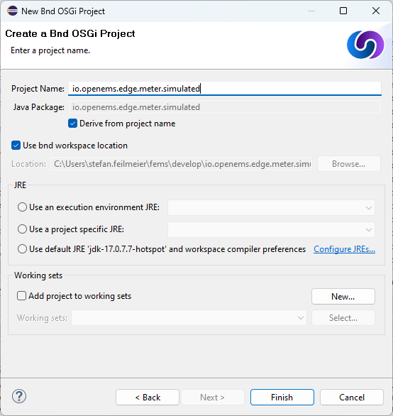
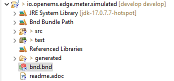
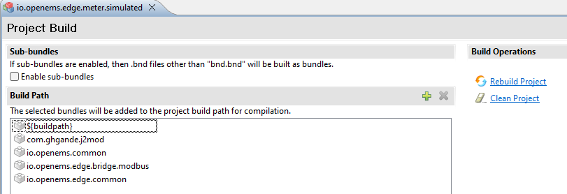

Implementing a device
1. Step-by-step guide
This chapter explains the steps required to implement a meter in OpenEMS Edge that is connected via Modbus/TCP. The meter itself is simulated using a small Modbus slave application, so no external hardware is required for this guide.
The tutorial is based on the Getting Started guide.
1.1. Create a new OSGi Bundle
For more information see OSGi Bundle.
-
In the menu choose File → New → Other
 Figure 1. Creating a new project in Eclipse IDE
Figure 1. Creating a new project in Eclipse IDE -
Select Bndtools → Bnd OSGi Project and press Next >
 Figure 2. Creating a Bnd OSGi Project in Eclipse IDE
Figure 2. Creating a Bnd OSGi Project in Eclipse IDE -
Select OSGi enRoute → Provider/Adapter Bundle and press Next >
Technically an OpenEMS Edge Device provides implementations of the interfaces of an OSGi API Bundle. In OSGi terminology this is called a Provider/Adapter Bundle  Figure 3. Creating a Bnd OSGi Provider/Adapter Bundle in Eclipse IDE
Figure 3. Creating a Bnd OSGi Provider/Adapter Bundle in Eclipse IDE -
Choose a project name and press Next >
The project name is used as the folder name in OpenEMS source directory. The naming is up to you, but it is good practice to keep the name lower case and use something like io.openems.[edge/backend].[purpose/nature].[implementation]. For the simulated meter io.openems.edge.meter.simulatedis a good choice.Figure 4. Naming a Bnd OSGi Provider/Adapter Bundle in Eclipse IDE -
Accept defaults for the final screen and press Finish
 Figure 5. Java settings for a Bnd OSGi Provider/Adapter Bundle in Eclipse IDE
Figure 5. Java settings for a Bnd OSGi Provider/Adapter Bundle in Eclipse IDE -
The assistant closes and you can see your new bundle.
1.2. Define Bundle dependencies
OSGi Bundles can be dependent on certain other Bundles. This information needs to be set in a bnd.bnd file.
-
Select the component directory src → io.openems.edge.meter.simulated
Figure 6. New simulated meter Bnd OSGi Provider/Adapter Bundle in Eclipse IDE -
Open the bnd.bnd file by double clicking on it.
-
Open the Build tab
You can see, that the Bundle is currently dependent on a core OSGi API bundle ('osgi.enroute.base.api'). We are going to expand that list. Figure 7. Bndtools Build configuration -
Click the + symbol next to Build Path.
 Figure 8. Bndtools Build Path configuration
Figure 8. Bndtools Build Path configuration -
Use the Project Build Path assistant to add the following Bundles as dependencies:
- io.openems.edge.common
-
The Edge Common Bundle provides implementations and services that are common to all OpenEMS Edge components.
- io.openems.edge.meter.api
-
The Meter API Bundle provides the interfaces for OpenEMS Edge Meter Nature.
- io.openems.edge.bridge.modbus
-
The Modbus Bundle provides the Bridge services for Modbus/RTU and Modbus/TCP protocols.
-
It is also a good moment to configure the Bundle meta information. Still inside the bnd.bnd file open the Source tab. Add some meta information - it will help the users of your component:
Bundle-Name: OpenEMS Edge Meter Simulated Bundle-Vendor: FENECON GmbH Bundle-License: https://opensource.org/licenses/EPL-2.0 Bundle-Version: 1.0.0.${tstamp} Export-Package: \ io.openems.edge.meter.api,\ io.openems.edge.meter.asymmetric.api,\ io.openems.edge.meter.symmetric.api Private-Package: io.openems.edge.meter.simulated -includeresource: {readme.md} -buildpath: \ osgi.enroute.base.api;version=2.1,\ io.openems.edge.meter.api;version=latest,\ io.openems.edge.bridge.modbus;version=latest,\ io.openems.edge.common;version=latest -testpath: \ osgi.enroute.junit.wrapper;version=4.12, \ osgi.enroute.hamcrest.wrapper;version=1.3
1.3. Define configuration parameters
OpenEMS Components can have several configuration parameters. They are defined as Java annotations and specific OSGi annotations are used to generate meta information that is used e.g. by Apache Felix Web Console to generate a user interface form (see Getting Started).
-
Make sure that the component directory is still selected.
-
In the menu choose File → New → Other
-
Select Java → Other… and press Next >
 Figure 9. Creating a Java annotation in Eclipse IDE
Figure 9. Creating a Java annotation in Eclipse IDE -
Set the name Config press Finish.
 Figure 10. Creating the Java annotation 'Config' in Eclipse IDE
Figure 10. Creating the Java annotation 'Config' in Eclipse IDE -
A Java annotation template was generated for you:
package io.openems.edge.meter.simulated; public interface Config { } -
Adjust the template to match the following code:
package io.openems.edge.meter.simulated; import org.osgi.service.metatype.annotations.AttributeDefinition; import org.osgi.service.metatype.annotations.ObjectClassDefinition; import io.openems.edge.meter.api.MeterType; @ObjectClassDefinition( (1) name = "Meter Simulated", // description = "Implements the simulated meter.") @interface Config { String service_pid(); (2) String id() default "meter0"; (3) boolean enabled() default true; (4) @AttributeDefinition(name = "Meter-Type", description = "Grid, Production (=default), Consumption") (5) MeterType type() default MeterType.PRODUCTION; (6) @AttributeDefinition(name = "Modbus-ID", description = "ID of Modbus bridge.") String modbus_id(); (7) @AttributeDefinition(name = "Modbus Unit-ID", description = "The Unit-ID of the Modbus device.") int modbusUnitId(); (8) @AttributeDefinition(name = "Modbus target filter", description = "This is auto-generated by 'Modbus-ID'.") String Modbus_target() default ""; (9) String webconsole_configurationFactory_nameHint() default "Meter Simulated [{id}]"; (10) }1 The @ObjectClassDefinition annotation defines this file as a Meta Type Resource for OSGi configuration admin. Use it to set a name and description for this OpenEMS Component. 2 The service_pid is used in internally by OpenEMS Edge framework and is automatically filled by OSGi. 3 The id configuration parameter sets the OpenEMS Component-ID (see Channel Adress). Note: A default ID 'meter0' is defined. It is good practice to define such an ID here, as it simplifies configuration in the UI. 4 The enabled parameter provides a soft way of deactivating an OpenEMS Component programmatically. 5 The @AttributeDefinition annotation provides meta information about a configuration parameter like name and description. 6 The 'Meter' nature requires definition of a MeterType that defines the purpose of the Meter. We will let the user define this type by a configuration parameter. 7 The 'Modbus-ID' parameter creates the link to a Modbus-Service via its OpenEMS Component-ID. At runtime the user will typically set this configuration parameter to something like 'modbus0'. 8 The Modbus service implementation requires us to provide the Modbus Unit-ID (also commonly called Device-ID or Slave-ID) of the Modbus slave device. This is the ID that is configured at the simulated meter. 9 The Modbus_target will be automatically set by OpenEMS framework and does usually not need to be configured by the user. Note: Linking other OpenEMS Components is implemented using OSGi References. The OpenEMS Edge framework therefor sets the 'target' property of a reference to filter the matched services. 10 The webconsole_configurationFactory_nameHint parameter sets a custom name for Apache Felix Web Console, helping the user to find the correct bundle.
1.4. Initialize Channels
Next step is to actually implement the OpenEMS Component as an OSGi Bundle.
The simulated meter is going to implement
-
the "OpenemsComponent" nature - like every OpenEMS Component
-
the "SymmetricMeter" nature - for a three-phase symmetric meter
Those natures require the simulated meter implementation to provide certain Channels, like "State" and "ActivePower". A common place to define and initialize those Channel-Objects is in a separate Utils class with a static Utils.initializeChannels() method. This method is later going to be called as early as possible by the component constructor, to be sure that the Channels are always defined and avoid NullPointerExceptions.
The initialization method uses Java Streams and Enums to facilitate the Definition of Channels.
Create a new file Utils.java with the following content:
package io.openems.edge.meter.simulated;
import java.util.Arrays;
import java.util.stream.Stream;
import io.openems.edge.common.channel.AbstractReadChannel;
import io.openems.edge.common.channel.IntegerReadChannel;
import io.openems.edge.common.channel.StateCollectorChannel;
import io.openems.edge.common.component.OpenemsComponent;
import io.openems.edge.meter.api.SymmetricMeter;
public class Utils {
public static Stream<? extends AbstractReadChannel<?>> initializeChannels(MeterSimulated c) { (1)
return Stream.of( //
Arrays.stream(OpenemsComponent.ChannelId.values()).map(channelId -> { (2)
switch (channelId) { (3)
case STATE:
return new StateCollectorChannel(c, channelId); (4)
}
return null;
}), Arrays.stream(SymmetricMeter.ChannelId.values()).map(channelId -> { (2)
switch (channelId) { (3)
case ACTIVE_POWER:
case ACTIVE_CONSUMPTION_ENERGY:
case ACTIVE_PRODUCTION_ENERGY:
case CURRENT:
case FREQUENCY:
case MAX_ACTIVE_POWER:
case MIN_ACTIVE_POWER:
case REACTIVE_POWER:
case VOLTAGE:
return new IntegerReadChannel(c, channelId); (4)
}
return null;
})).flatMap(channel -> channel);
}
}| 1 | The static initializeChannels() method returns a Java Stream of Channel objects. | ||
| 2 | Using Streams the Java lambda function is called for each declared ChannelId. This command is repeated for every Nature that is implemented by the OpenEMS Component. | ||
| 3 | Using a switch-case statement each ChannelId can be evaluated.

Figure 11. Eclipse IDE Quick Fix for switch-case
|
||
| 4 | This line creates the actual Definition of the Channel and returns a Channel object instance of the required type. |
1.5. Implement the OpenEMS Component
The Bndtools assistant created a ProviderImpl.java file. First step is to set a proper name for this file. To rename the file, select it by clicking on it and choose Refactor → Rename… in the menu. Write MeterSimulated as 'New name' and press Finish.
+ .Renaming a Java class in Eclipse IDE image::eclipse-rename.png[Renaming a Java class in Eclipse IDE]
+
Afterwards replace the content of MeterSimulated.java file with the following code:
+
package io.openems.edge.meter.simulated;
import org.osgi.service.cm.ConfigurationAdmin;
import org.osgi.service.component.ComponentContext;
import org.osgi.service.component.annotations.Activate;
import org.osgi.service.component.annotations.Component;
import org.osgi.service.component.annotations.ConfigurationPolicy;
import org.osgi.service.component.annotations.Deactivate;
import org.osgi.service.component.annotations.Reference;
import org.osgi.service.component.annotations.ReferenceCardinality;
import org.osgi.service.component.annotations.ReferencePolicy;
import org.osgi.service.component.annotations.ReferencePolicyOption;
import org.osgi.service.metatype.annotations.Designate;
import io.openems.edge.bridge.modbus.api.AbstractOpenemsModbusComponent;
import io.openems.edge.bridge.modbus.api.BridgeModbus;
import io.openems.edge.bridge.modbus.api.ModbusProtocol;
import io.openems.edge.bridge.modbus.api.element.SignedWordElement;
import io.openems.edge.bridge.modbus.api.task.FC3ReadRegistersTask;
import io.openems.edge.common.channel.doc.Doc;
import io.openems.edge.common.component.OpenemsComponent;
import io.openems.edge.common.taskmanager.Priority;
import io.openems.edge.meter.api.MeterType;
import io.openems.edge.meter.api.SymmetricMeter;
@Designate(ocd = Config.class, factory = true) (1)
@Component( (2)
name = "Meter.Simulated", (3)
immediate = true, (4)
configurationPolicy = ConfigurationPolicy.REQUIRE) (5)
public class MeterSimulated extends AbstractOpenemsModbusComponent (6)
implements SymmetricMeter, OpenemsComponent { (7)
private MeterType meterType = MeterType.PRODUCTION;
@Reference
protected ConfigurationAdmin cm; (8)
public MeterSimulated() {
Utils.initializeChannels(this).forEach(channel -> this.addChannel(channel)); (9)
}
@Reference(policy = ReferencePolicy.STATIC, policyOption = ReferencePolicyOption.GREEDY, cardinality = ReferenceCardinality.MANDATORY)
protected void setModbus(BridgeModbus modbus) {
super.setModbus(modbus); (10)
}
@Activate
void activate(ComponentContext context, Config config) { (11)
this.meterType = config.type();
super.activate(context, config.service_pid(), config.id(), config.enabled(), config.modbusUnitId(), this.cm,
"Modbus", config.modbus_id());
}
@Deactivate
protected void deactivate() { (12)
super.deactivate();
}
public enum ChannelId implements io.openems.edge.common.channel.doc.ChannelId { (13)
;
private final Doc doc;
private ChannelId(Doc doc) {
this.doc = doc;
}
public Doc doc() {
return this.doc;
}
}
@Override
public MeterType getMeterType() { (14)
return this.meterType;
}
@Override
protected ModbusProtocol defineModbusProtocol() { (15)
return new ModbusProtocol(this, (16)
new FC3ReadRegistersTask(1000, Priority.HIGH, (17)
m(SymmetricMeter.ChannelId.ACTIVE_POWER, new SignedWordElement(1000)))); (18)
}
@Override
public String debugLog() { (19)
return "L:" + this.getActivePower().value().asString();
}
}| 1 | The @Designate annotation is used for OSGi to create a connection to the Config annotation class. It also defines this Component as a factory, i.e. it can produce multiple instances with different configurations. | ||
| 2 | The @Component annotation marks this class as an OSGi component. | ||
| 3 | The name property sets the unique name of this component. It is used to store configuration in the filesystem, to identify the component inside Apache Felix Web Console, and so on. Configure a human-readable name in the form [nature].[vendor].[product]. | ||
| 4 | The immediate property defines whether the component should be started immediately. Configure the Component to be started immediately after configuration, i.e. it is not waiting till its service is required by another Component. | ||
| 5 | The configurationPolicy define that the configuration of the Component is required before it gets activated. | ||
| 6 | To ease the implementation of a Modbus device we can extend the AbstractOpenemsModbusComponent class.
|
||
| 7 | The class implements OpenemsComponent. This makes it an OpenEMS Component.
The Device that we are is a SymmetricMeter. We already defined the required Channels in the _initializeChannels() method. Additionally the Component also needs to implement the Nature interface.
|
||
| 8 | The super.activate() method requires an instance of ConfigurationAdmin as a parameter. Using the @Reference annotation the OSGi framework is going to provide the ConfigurationAdmin service via dependency injection. |
||
| 9 | In the constructor the Utils.initializeChannels() method is called to initialize Channels. It receives a Stream of Channel objects and adds all of them to the Component using the addChannel() method. |
||
| 10 | The Component utilizes an external Modbus Component (the Modbus Bridge) for the actual Modbus communication. We receive an instance of this service via dependency injection (like we did already for the ConfigurationAdmin service). Most of the magic is handled by the AbstractOpenemsModbusComponent implementation, but the way the OSGi framework works, we need to define the @Reference explicitly here in the actual implementation of the component and call the parent setModbus() method. |
||
| 11 | The activate() method (marked by the @Activate annotation) is called on activation of an object instance of this Component. It comes with a ComponentContext and an instance of a configuration in the form of a Config object. All logic for activating and deactivating the OpenEMS Component is hidden in the super classes and just needs to be called from here. | ||
| 12 | The deactivate() method (marked by the @Deactivate annotation) is called on deactivation of the Component instance. | ||
| 13 | The simulated implementation is only going to provide Channels defined by OpenemsComponent and SymmetricMeter natures. It is still good practice to add a skeleton for custom Channels to the Component implementation. We therefor add the Channel Declaration block inside the class.
NOTE:
|
||
| 14 | The SymmetricMeter Nature requires us to provide a MeterType via a MeterType getMeterType() method. The MeterType is provided by the Config. |
||
| 15 | AbstractOpenemsModbusComponent requires to implement a defineModbusProtocol() method that returns an instance of ModbusProtocol. The ModbusProtocol class maps Modbus addresses to OpenEMS Channels and provides some conversion utilities. Instantiation of a ModbusProtocol object uses the Builder pattern | ||
| 16 | Creates a new ModbusProtocol instance. A reference to the component itself is the first parameter, followed by an arbitrary number of 'Tasks' (implemented as a Java varags array). | ||
| 17 | FC3ReadRegistersTask is an implementation of Modbus function code 3 "Read Holding Registers" . Its first parameter is the start address of the register block. The second parameter is a priority information that defines how often this register block needs to be queried. Following parameters are an arbitrary number of ModbusElements.
|
||
| 18 | Here the internal m() method is used to make a simple 1-to-1 mapping between the Modbus element at address 1000 and the Channel SymmetricMeter.ChannelId.ACTIVE_POWER. The Modbus element is defined as a 16 bit word element with an signed integer value.
NOTE:
|
||
| 19 | Finally it is always a good idea to define a debugLog() method. This method is called in each cycle by the Controller.Debug.Log and very helpful for continuous debugging. |
1.6. Start the device simulator
To start the device simulator, open the io.openems.edge.bridge.modbus project and navigate to the test → io.openems.edge.brige.modbus folder. There you find the ModbusSlaveSimulator.java file. Right-click that file and select Run As → Java Application.
1.7. Enable the Component
To enable the Component for running, open the io.openems.edge.application project and open the EdgeApp.bndrun file. Change to the Source view and create two new lines to declare the new Component.
First: somewhere below -runrequires: \ add
osgi.identity;filter:='(osgi.identity=io.openems.edge.meter.simulated)',\
Second: somewhere below -runbundles: \ add
io.openems.edge.meter.simulated;version=snapshot,\
You may have found, that the entries are sorted alphabetically.
1.8. Run the implementation
Switch back to Run view and press Run OSGi to run OpenEMS Edge.

From then you can configure your component as shown in Getting Started guide. Add the following configurations inside Apache Felix Web Console:
- Controller Debug Log
-
-
ID:
ctrlDebugLog0 -
Enabled:
checked
-
- Scheduler All Alphabetically
-
-
ID:
scheduler0 -
Enabled:
checked -
Cycle time:
1000
-
- Bridge Modbus/TCP
-
-
ID:
modbus0 -
IP-Address:
localhost -
Enabled:
checked
-
- Meter Simulated
-
-
ID:
meter0 -
Enabled:
checked -
Meter-Type:
PRODUCTION -
Modbus-ID:
modbus0 -
Modbus Unit-ID:
1
-
In the Eclipse IDE console log you should see an output like this:
2018-11-14 23:03:03,898 [Executor] INFO [e.controller.debuglog.DebugLog] [ctrlDebugLog0] _sum[Ess SoC:0 %|L:0 W Grid:0 W Production:500 W Consumption L:500 W] meter0[L:500 W]
It shows a Production of 500 W which is what is provided by the simulated meter device. Congrats!